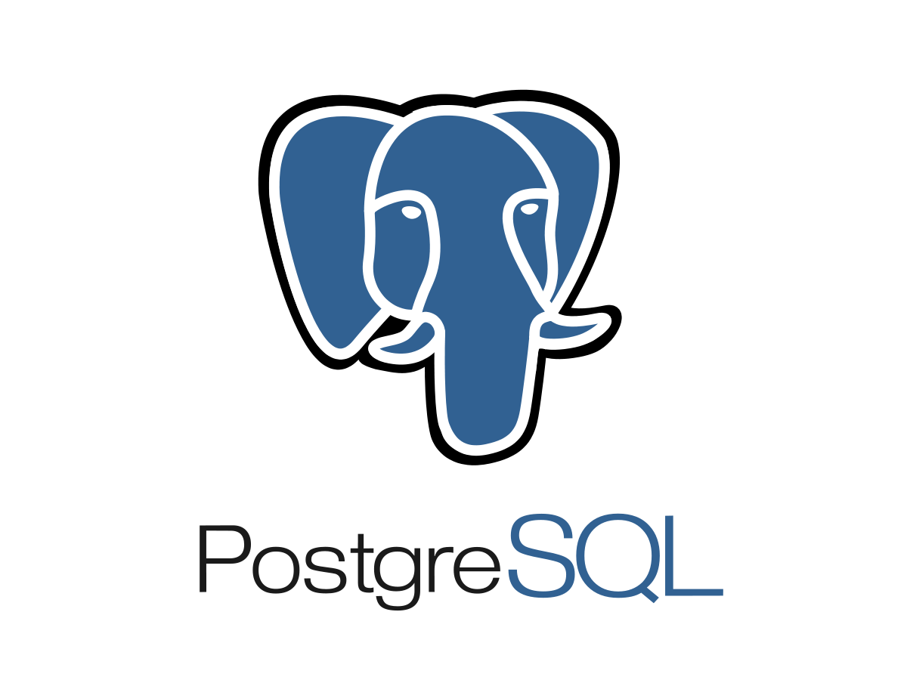

Curso Básico de Inteligência Artificial
Projeto Interdisciplinar
Requisitos
- Rodar de forma isolada (sem internet)
- Trabalhar com dados protegidos pela LGPD
- Ser auditável
Restrições Técnicas e Fatores Limitantes
- 1. Sem infraestrutura local de desenvolvimento.
- 2. Sem VRAM para rodar modelos robustos (40GB ou mais).
- 3. Ausência de capacitação técnica tanto por parte dos orientadores quanto alunos (cursos, certificações...).
- 4. Dificuldade de material para trabalho tendo em vista o insumo ser protegido por lei.
Arquitetura

- Os parâmetros de cálculo são persistidos em banco de dados.
- O motor de cálculo opera de forma determinística via código-fonte (hardcoded), mitigando o risco de alucinações da IA.
- Necessidade de manutenção manual dos parâmetros a cada alteração legislativa.
- Responsável pela redação dos relatórios.
- Modelo embarcado totalmente isolado de internet.
- Compara valores calculados com a legislação vigente e faz um parecer técnico.
- Indexação da legislação vigente para embasar as respostas do modelo (RAG).
- Atualização contínua da base de conhecimento frente a alterações normativas.
Fluxo de Execução
1. Autenticação e Abertura do Exame
→
2. Ingestão do Contracheque
→
3. Ingestão da Ficha Individual
→
4. Validação e Conciliação de documentos
→
5. Auditoria de Rubricas Fixas
→
6. Auditoria de Rubricas Eventuais
→
7. Geração de Relatório Individual
→
8. Consolidação de Relatório Unificado
→
9. Finalização do Processo
Linha Temporal do Roadmap
31/ago
Mapeamento do Workflow de Auditoria
31/ago
Definição do Escopo de Automação
07/set
Coleta e Ingestão de Dados
11/set
Modelagem e Persistência de Parâmetros
18/set
Customização do Modelo
30/set
Pipeline de RAG Normativo
09/out
Desenvolvimento do Front-End (UI)
15/out
Gestão de Controle de Acesso (IAM/RBAC)
30/out
Auditoria e Validação da Base Legal
10/nov
Testes Integrados (UX/UI)
10/nov
Adequação da UI ao Padrão Institucional
21/nov
Entrega do Piloto